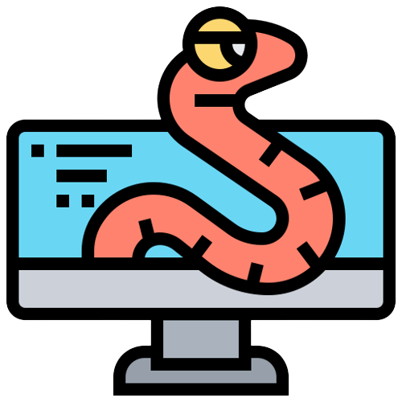

What is malware?
Malware, short for malicious software, is a term used to describe any software or program that is specifically designed to harm, exploit, or gain unauthorized access to computer systems, networks, or data. Malware is created with the intent to cause damage, steal information, or disrupt the normal operation of devices or networks.
There are many types of malware and these are the most common types of malware that you will likely to encounter
There are various types of malware, each with its own specific objectives:

1. Viruses
Viruses attach themselves to legitimate programs or files and replicate when the infected program or file is executed. They can spread to other files and computers, causing harm along the way. When a computer virus infects a file, it embeds its own code into the file's code, making it a carrier for the virus. When the infected file is executed or opened, the virus code is activated and takes action based on its design and intent. This action may involve damaging or modifying data, stealing sensitive information, disrupting system operations, or replicating itself to other files and locations.
Here's a typical scenario of how a computer virus works:
1. Infection: The virus code attaches itself to a legitimate program or document, becoming a part of it.
2. Activation: When the infected program or document is executed or opened by a user, the virus is triggered and starts running.
3. Replication: The virus seeks out other files on the same computer or connected network to infect. It may modify those files by inserting its code into them.
4. Propagation: Infected files are now carriers of the virus, and if shared or transferred to other computers or users, the virus spreads further.
Computer viruses can spread through various means, such as email attachments, infected downloads, compromised websites, and removable storage devices. Their impact can range from relatively harmless pranks to severe damage to data, hardware, or even the entire network. Some viruses are designed to be stealthy, avoiding detection and making removal difficult.
To protect against computer viruses, it's essential to use reputable antivirus software, regularly update operating systems and applications, exercise caution when opening email attachments or downloading files from unknown sources, and keep backups of important data.

2. Worms
Worms are standalone programs that can self-replicate and spread across networks without the need for a host file. They often exploit security vulnerabilities to propagate quickly. In the context of computers and cybersecurity, a worm is a type of malicious software (malware) that spreads independently across computer networks without the need for a host file. Unlike viruses, worms do not need to attach themselves to other programs or files to propagate; they are standalone programs that can self-replicate and spread from one computer to another.
Here's how a computer worm typically operates:
1. Infiltration: The worm gains access to a computer system through various means, such as exploiting software vulnerabilities, weak passwords, or social engineering techniques.
2. Replication: Once inside the system, the worm begins to replicate itself. It creates copies of its own code or payload to spread to other connected devices or computers on the same network.
3. Network Propagation: The worm seeks out vulnerable computers or devices on the local network or the internet. It uses various techniques like scanning for open ports or using a list of known vulnerable IP addresses to find potential targets.
4. Infection: When the worm identifies a susceptible system, it tries to exploit security flaws to gain unauthorized access. Once successful, it copies itself onto the new system and begins the replication process again.
5. Continued Spread: The newly infected systems then become additional launch points for the worm to spread further, creating a self-perpetuating cycle.
Worms can cause significant disruptions in computer networks due to their ability to spread rapidly and indiscriminately. They can consume network bandwidth, overload servers, and cause denial-of-service (DoS) conditions. Some worms are designed to carry harmful payloads, such as destroying files, stealing sensitive information, or installing other forms of malware.
To protect against worms and other malware, it's crucial to maintain updated security patches for operating systems and software, use firewalls and network intrusion detection systems, implement strong passwords, and exercise caution when opening email attachments or clicking on links from unknown sources. Regularly updating antivirus software and performing network security audits can also help detect and mitigate potential worm infections.
3. Trojan Horses (Trojans)
In the context of computers and cybersecurity, a Trojan, also known as a Trojan Horse or simply Trojan, is a type of malicious software (malware) that disguises itself as a legitimate program or file to deceive users into installing or executing it. Once installed, a Trojan can perform various harmful actions on a computer system without the user's knowledge or consent. Trojans are named after the legendary wooden horse used by the Greeks during the Trojan War, as they both involve deceptive tactics to infiltrate a protected environment. Trojans masquerade as legitimate software or files, tricking users into installing them. Once installed, they can provide unauthorized access to the attacker, steal data, or open a backdoor for other malware.
Here's how a Trojan typically operates:
1. Disguise: Trojans often masquerade as harmless or desirable files, such as useful software, games, or multimedia content. They might be distributed through fake software download links, email attachments, or compromised websites.
2. Installation: When a user unknowingly downloads and executes the Trojan, it gains entry into the user's system. This may happen because the user believes they are installing legitimate software or opening a harmless file.
3. Payload: Once inside the system, the Trojan can carry out various malicious activities, depending on its design and purpose. Some common actions include stealing sensitive information (such as passwords or financial data), creating backdoors to allow remote access for attackers, deleting or modifying files, encrypting data for ransom (ransomware Trojan), or using the infected computer as part of a botnet for further attacks.
4. Silent Operation: Trojans typically work in the background, making it difficult for users to detect their presence. They may avoid drawing attention to themselves to maintain their effectiveness.
Unlike viruses and worms, Trojans do not replicate on their own or spread to other systems automatically. Instead, they rely on social engineering techniques to trick users into executing them.
To protect against Trojans and other malware, it's essential to exercise caution when downloading files or clicking on links from unknown or untrusted sources. Keeping antivirus software and operating systems up to date, using strong and unique passwords, and being cautious about email attachments can also help prevent Trojan infections. Additionally, network firewalls and intrusion detection systems can provide an additional layer of defense against Trojans attempting to communicate with malicious command-and-control servers.